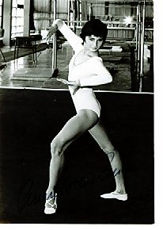

Annelore Zinke (GDR)
1974 World UB Champion
1975 European AA Bronze Medalist

Medal Total
European Championships:
1 Silver, 1 Bronze
World Championships: 1 Gold, 1
Silver
Annelore was born on December 10, 1958, in Lauchhammer-Ost. She began gymnastics at age 9 and trained at SC Dynamo Berlin. Her parents were active in sports (her father was a rifle shooter and her mother was a handball player). Annelore's gymnastics idol was Karin Janz. Her international career was effectively ended in 1975 after she broke both elbows during a training session.
Competition Results
1973
Dynamo Spartakiade: 3rd Team, 2nd AA, 2nd UB, 2nd FX
GDR Championships: 5th AA, 2nd UB
Schwerin International: 2nd AA, 1st V
1974
DTV Cup: 5th AA
GDR Championships: 2nd AA, 2nd UB
GDR-USSR-CSSR Meet: 2nd UB
JPN-GDR Dual Meet: 1st Team, 3rd AA
World Championships: 2nd Team, 6th AA, 1st UB
1975
DTV Cup: 4th AA, 1st V, 1st UB
European Championships: 3rd AA, 2nd UB, 5th V, 5th B,
6th FX
GDR-JPN Dual Meet: 1st Team, 2nd AA, 1st UB, 2nd V
GDR-SWE-NOR Meet: 1st Team, 1st AA
Leipzig International: 1st UB
1976
FRG-GDR Dual Meet: 1st Team, 2nd AA
GDR Championships: 8th AA, 6th FX
GDR-HUN: 1st Team, 2nd AA
1977
DTV Cup: 2nd B
1978
GDR University Championships: 1st AA
1980
GDR University Championships: 1st AA
This page was created on September
12, 2004 and was last updated on July 02, 2021.
© Gymn Forum